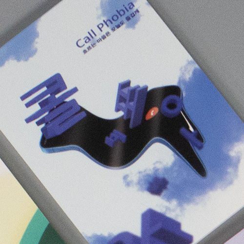
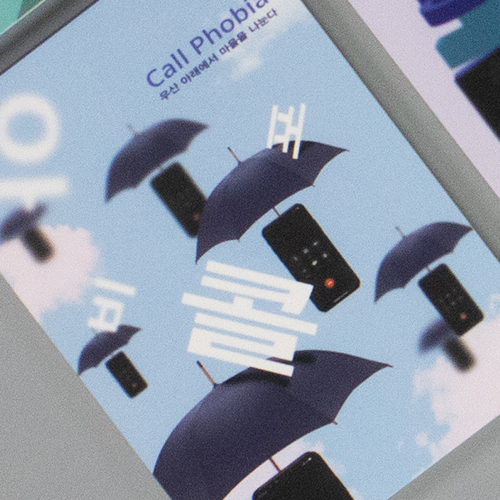
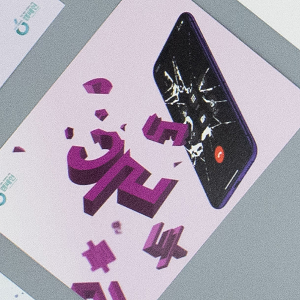
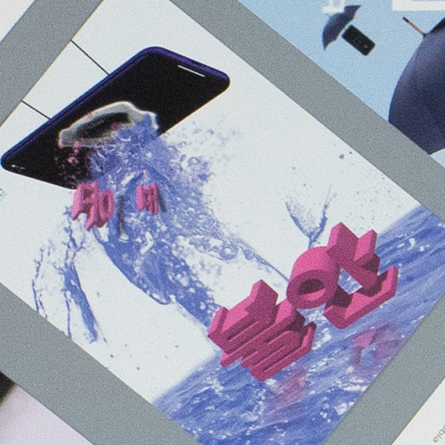
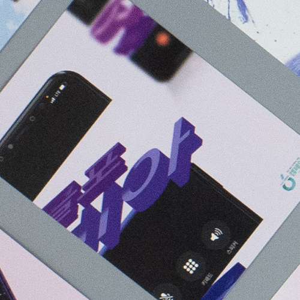
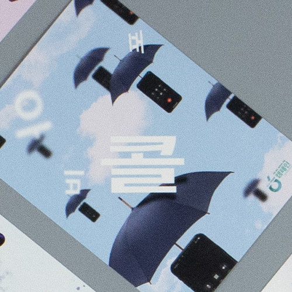
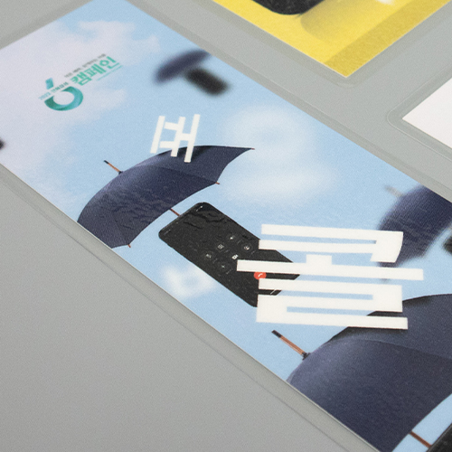
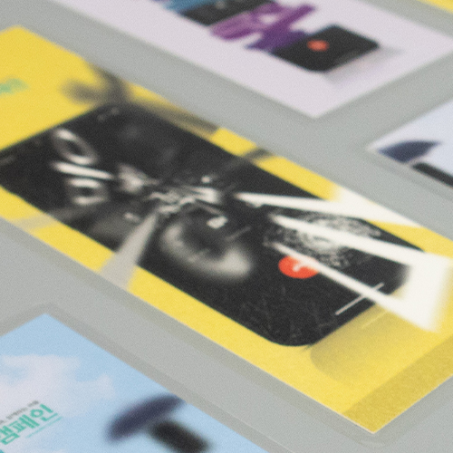
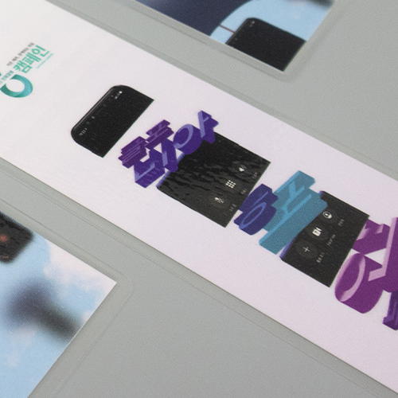

전화감
섬 캠페인에 대해서
콜포비아로 힘들어하는 20대에서 50대의 직장인과 그렇지 않은 직장인들에게 콜포비아라는 증상은 누구나가 겪을 수 있는 하나의 증상이라는 것을 알리고 공감대를 형성할 수 있도록 만드는 것을 도와줍니다.
포스터

프로모션 상품
공책
-
공책 A
전화를 할 때, 불안과 공포로 단어가 제대로 전달되지 않는 직장인들의 불편한 상황을 낙하산에서 떨어지는 글자들의 모습으로 표현해 불안한 심리와 상황을 초현실적으로 보여주고 있습니다.
-

공책 B
콜포비아 증상을 직장인들이 어떻게 느껴지는지를 그래픽적으로 표현해서 떨어지는 단어들을 통해 콜포비아에 대한 사람들의 부정적인 감정을 초현실적으로 표현한 전화로 극대화했습니다.
-

공책 C
콜포비아를 경험하고 있는 사람들에게 다른 사람들도 전화를 향한 여러가지 감정들을 가지고 있다는 것을 보여주는 것으로 공동체 의식과 극복 가능성을 가지도록 합니다.
-

공책 D
전화를 할 때, 느껴지는 불안과 공포와 같은 감정들을 다른 사람들과 함께 나누고 경험하는 것으로 이를 예방하고 이겨내는 것이 가능하다는 것을 보여주고 있습니다.
-

-
엽서
-

엽서 A
콜포비아 증상으로 느끼는 불안과 공포 등의 감정은 적극적으로 전화를 통한 활동을 한다면 부정적인 감정들을 떨쳐낼 수가 있다는 것을 초현실적인 모습으로 사람들에게 보여주고 있습니다.
-

엽서 B
콜포비아 증상이 불안과 공포와 같은 부정적인 감정들이 넘치고 있는 현대사회에서 현실의 모습을 스마트폰에서 감정이 나오면서 불안과 공포가 차오르는 초현실적 모습으로 표현했습니다.
-

엽서 C
현대를 살아가는 직장인들은 언제 어디에서나 콜포비아를 겪을 수 있지만 대처하는 방법에 따라서 그 위험의 거리가 달라진다는 것을 보여주고 있습니다.
-

엽서 D
전화를 하면서 사람들은 불안과 공포와 같은 부정적인 감정들을 느끼지만 부담이 없는 상대방과 함께 협력하면서 노력을 한다면 콜포비아를 극복할 수 있다는 것을 시각적으로 표현했습니다.
-
-
책갈피
-

책갈피 A
콜포비아 증상으로 인해서 느껴지는 부정적인 감정들은 친한 사람들과의 전화와 협력 등을 통해서 이겨내고 예방할 수가 있다는 것을 표현해서 사람들에게 긍적적인 모습을 전달했습니다.
-

책갈피 B
일상에서 콜포비아를 겪고있는 사람들의 감정을 시각적으로 표현해서 콜포비아의 부정적인 감정이 느껴질 수 있도록 전화에 부딪히고 부서지는 모습으로 표현을 했습니다.
-

책갈피 C
콜포비아의 근본적인 문제들은 스마트폰으로 인한 비대면 활동이며, 이로인해서 불안과 공포의 부정적인 감정들을 느끼게 된다는 사실을 전달해서 현재의 상황을 알 수 있도록 했습니다.
콜포비아에 대해서
현대사회에서 스마트폰을 이용하는 직장인과 일반인이라면 겪을 수 있는 증상으로 대화 및 주문과 같은 대부분의 활동들을 비대면으로 진행하면서 사람과 사람과의 직접적인 접촉이 현저히 줄어들었습니다.
원인
과거에는 직접적으로 만나거나 전화를 이용한 대화를 통해서 업무나 개인적인 일을 처리했었지만 오늘날에는 개인적인 일이나 회사 업무 등을 스마트폰, SNS 등과 같은 전자기기와 소셜네트워크만 있다면 불필요한 과정 없이 비대면으로 누구나 간단하게 원하는 일을 처리할 수 있게 되었습니다. 하지만 이러한 비대면 시스템의 공급으로 인해서 사람들은 서로 만나거나 직접적인 대화를 통한 의사소통을 하는 것이 익숙해지지 않다고 느끼게 되고, 어색하다고 생각하게 됩니다. 또한, 막상 전화를 이용해서 대화를 하게되면 전화를 통한 대화에 대해서 어색함을 느끼게 되면서 전화 자체에 불안, 공포와 같은 부정적인 감정을 가지게되는 20대에서 50대의 직장인들이 현대에 증가하고 있습니다.
피해
첫번째
두번째
세번째

직장인에게 끼치는 영향
첫번째
두번째
세번째
네번째

증상
첫번째
두번째
세번째
네번째
다섯번째

진단방법
첫번째
두번째
세번째
네번째

극복방법
첫번째
두번째
세번째
네번째
다섯번째


콜포비아에 관해서 궁금한 점을 말해주세요.